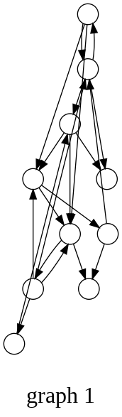
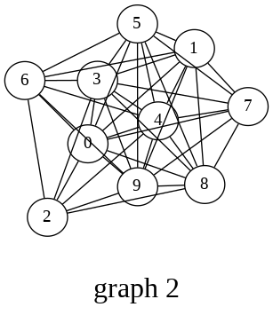
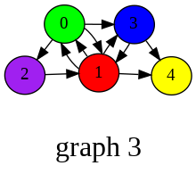

Stanford Network Analysis Package¶
Note
For some reasons, I can’t have the snap module properly imported on mac. So, currently this notebook only runs on Google Colab.
!pip install snap-stanford
ERROR: Could not find a version that satisfies the requirement snap-stanford (from versions: none)
ERROR: No matching distribution found for snap-stanford
import snap
from IPython.display import Image
---------------------------------------------------------------------------
ModuleNotFoundError Traceback (most recent call last)
<ipython-input-2-f5bc4bbca68b> in <module>
----> 1 import snap
2 from IPython.display import Image
ModuleNotFoundError: No module named 'snap'
Graph = snap.GenRndGnm(snap.PNGraph, 10, 20)
snap.DrawGViz(Graph, snap.gvlDot, "graph.png", "graph 1")
Image('graph.png')

UGraph = snap.GenRndGnm(snap.PUNGraph, 10, 40)
snap.DrawGViz(UGraph, snap.gvlNeato, "graph_undirected.png", "graph 2", True)
Image('graph_undirected.png')

NIdColorH = snap.TIntStrH()
NIdColorH[0] = "green"
NIdColorH[1] = "red"
NIdColorH[2] = "purple"
NIdColorH[3] = "blue"
NIdColorH[4] = "yellow"
Network = snap.GenRndGnm(snap.PNEANet, 5, 10)
snap.DrawGViz(Network, snap.gvlSfdp, "network.png", "graph 3", True, NIdColorH)
Image('network.png')
